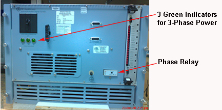
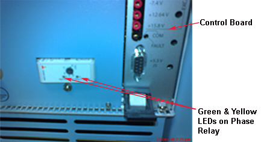
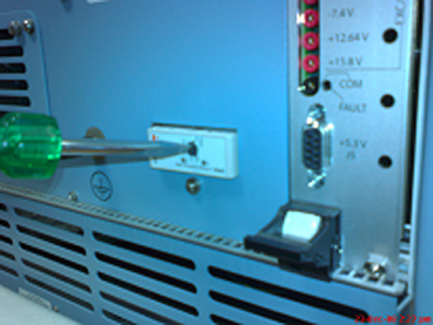

Operating Documentation
Direction 5670006, Rev# 1
Discovery MR750w GEM Service Methods
Module Version 2.0, Version Date 11/13/09
Operating Documentation |
This procedure describes how to troubleshoot issues with the Scan Room Power Supply (SRPS), GE P/N 5231801. See Table 1.
| ||||
| Do not remove or insert the Control Board when the SRPS is powered On. Turn the SRPS input breaker Off before removing the Control Board. | ||||
Table 1: Process to Troubleshoot SRPS
| Symptom | Cause | Solution |
| All 3 green phase indicators are Off on the Front Panel. See Illustration 1. Both green and yellow LEDs are Off on the Phase Relay. See Illustration 2. |
|
|
| All 3 green phase indicators are Off on the Front Panel. See Illustration 1. Green LED is On and yellow LED is Off on the Phase Relay. See Illustration 2. | Power input phases are swapped (not sequenced properly with respect to SRPS). | Swap input phases at the PEN Cabinet, one at a time until both green and yellow LEDs on Phase Relay are On. |
SRPS is not powered, but all LEDs are On (both Phase Relay LEDs and 3 green phase indicators on Front Panel). See Illustration 1 and Illustration 2. |
| A confidence loop exists in all SRPS output power cables that,
if opened, will set the SRPS power supply outputs to zero volts.
|
See the following illustrations for location of LEDs and Phase Relay.
Illustration 1: Location of Three Green Indicators

Illustration 2: Location of Green and Yellow LEDs and Control Board

Illustration 3: Setting for 160 V
